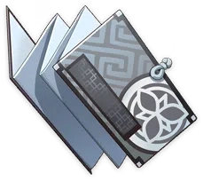

Currency

Mora
Common currency. The one
language everybody speaks.
Character Exp Materials
Character and Weapon Enhancement Material
Character Level-Up Material
Character Ascension Material
Character Talent Material

Teachings of Freedom
Talent Level-Up material.
Freedom is the spirit of the land of the wind.
The freedom to live is one of such. It is the freedom
to live freely and healthily without concerns of one's
own safety.
Guide to Freedom
Talent Level-Up material.
Freedom is the spirit of the land of the wind.
The freedom of travel is one of such. It is the freedom
to traverse the land freely without being obstructed.
Teachings of Resistance
Talent Level-Up material.
Resistance is the backbone of the land of the wind.
The history of Mondstadt is one of resistances. People
rose up to prevent past conflicts from ever being
forgotten, like sprouts breaking through the soil, like
the eternal wind eroding through stone walls.
Guide to Resistance
Talent Level-Up material.
Resistance is the backbone of the city of Wind.
The history of Mondstadt is one of resistances. People
rose up to grant the citizens of Mondstadt the freedom
they now enjoy, like the Anemo Archon blowing away the
snow, or like Vennessa rising up to fight.
Teachings of Ballad
Talent Level-Up material.
Poetry is the soul of the land of the wind.
Poetry is the manifestations of beautiful feelings. On
a beautiful day, the breezes carry with them poetry
that touches the heart of people like the wind
caressing the leaves.
Guide to Ballad
Talent Level-Up material.
Poetry is the soul of the land of the wind.
Poetry is the manifestations of the will to encourage.
In the dark days, the gales in the streets and
alleyways whisper words of fury, like the battle drums,
like the low rumbling before the storm.
Teachings of Prosperity
Talent Level-Up material.
Prosperity is the people's pursuit in the land of Geo.
Prosperity is the blessing of Liyue, it is the
foundation of the great city built by the gods and the
people of Liyue, and it is the source of the peace and
safety of the land.
Guide to Prosperity
Talent Level-Up material.
Prosperity is the people's pursuit in the land of Geo.
Prosperity is the promise made by Liyue to its
children: To repay the hard-working laborers with
enough gold to brighten up this land.
Teachings of Diligence
Talent Level-Up material.
Industriousness is the foundation of the land of Geo.
Diligence is having the bravery and the strength to
conquer mountains and seas and to pursue gold and
prosperity through honest, hard work.
Guide to Diligence
Talent Level-Up material.
Industriousness is the foundation of the land of Geo.
Industriousness is the catalyst that flows in the blood
of the people of Liyue, able to turn rocks into gold.
It is what lies behind the greatness of its great
commercial port.
Teachings of Gold
Talent Level-Up material.
Gold is the symbol of the land of Geo.
Gold is the blood that flows deep within Liyue's veins,
the muscle that makes up Liyue's beating heart, and the
bones that make Liyue stand proud.
Guide to Gold


Talent Level-Up material.
Gold is the symbol of the land of Geo.
Gold symbolizes conversion. This is the unspoken
understanding between Liyue's mountains, land, city,
and people. In Liyue, industriousness is converted into
gold, and gold into prosperity.
Teachings of Transience
Talent Level-Up material.
Transience is the dream of the nation of thunder.
Fleeting glories are the highest expression of mortal
beauty, for are we mortals not like the flashing
lightning itself? Like a lovely dream or blossoming
spark, we shall leave a gorgeous mark on the eternal
night sky.
Guide to Transience
Talent Level-Up material.
Transience is the dream of the nation of thunder.
We find the greatest joys in mortal life in transient
dreams, for is life itself not like the shadow of the
thunder? Pursue your dreams into the clouds if you
wish, and enjoy the unexpected silence of the dim
lamp-lit nights.
Teachings of Elegance
Talent Level-Up material.
Elegance is the form of the nation of thunder.
Elegance brooks no flattery, and the elegant are ever
noble. They are like the sea eagles who soar on high to
contend with the resounding storms. They will not cater
to philistine vulgarity, as one would not cast a flower
crown into the mud, staining its dignity.
Guide to Elegance
Talent Level-Up material.
Elegance is the form of the nation of thunder.
Elegance shuns arrogance. The elegant are ever humble,
and only by discarding vanity and sloth may one see
clearly — and is there not beauty and loveliness even
in the basest of appearances?
Teachings of Light
Talent Level-Up material.
Light is the yearning of the land of thunder.
The ruler who claims to have perceived all forever aims
to hoard celestial glory. But this vision that cannot
be shared only leads people to long for it more
fiercely, like moths diving into the flame.
Guide to Light
Talent Level-Up material.
Light is the yearning of the land of thunder.
Though the sun rays themselves should be blocked by
layers upon layers of clouds, there are still those in
the thunder god's land who dream of piercing that
wrathful sea of lightning to pursue the glory of the
divine, fearing not that they shall be cruelly struck
down.
Teachings of Admonition
Talent Level-Up material.
Admonition is the branches of the nation of wisdom.
Admonition comes from a pure heart. Only sensible words
of goodwill can express profound wisdom and free the
sprout of knowledge from the shackles of arrogance.
Guide to Admonition
Talent Level-Up material.
Admonition is the branches of the nation of wisdom.
Admonition is paired with wise thinking. Careful
deliberation affords humble words a clarity that
convinces the wise and enlightens the foolish. Such
words allow wisdom to flow like an unobstructed
river.
Teachings of Ingenuity
Talent Level-Up material.
Ingenuity is the leaf-veins of the nation of wisdom.
Ingenuity springs forth from benevolent consideration.
They say that "a poisonous tree bears no kind fruit."
Similarly, ingenious nascent ideas are always born from
determined and benign minds, for only they are worthy
bearers of wisdom.
Guide to Ingenuity
Talent Level-Up material.
Ingenuity is the leaf-veins of the nation of wisdom.
Ingenuity sets words of integrity on the right path.
One who thinks out of goodwill and in a clever and
careful fashion never deviates from the path of boons.
Yet one who thinks with contempt and malice shall taint
their words with despicable colors.
Teachings of Praxis
Talent Level-Up material.
Praxes are the roots of the nation of wisdom.
Praxes stem from an unwavering will. All wisdom is
manifested through the unyielding pursuit of goodness.
Where goodness is not practiced, ingenuity and
eloquence wither.
Guide to Praxis
Talent Level-Up material.
Praxes are the roots of the nation of wisdom.
Praxes validate words of honesty. Though one speaks and
acts out of goodwill, one has not yet obtained wisdom.
Wisdom, born from action, is a signet pressed upon
honest words.
Teachings of Equity
The shore of the Nation of
Water is equity.
Equity sets boundaries on rights. Without equity, the
rights granted by law will be abused, and become a tool
to damage our virtuous customs.
Guide to Equity
The shore of the Nation of
Water is equity.
Equity is the foundation upon which Fontaine was
founded. Equity forms the standard of the law. If law
loses the essence of equity, it will become a
chessboard played for profit.
Teachings of Justice
The sword of the Nation of
Water is justice.
The law of Fontaine walks with the sword of justice in
hand. Without the guidance of justice, all law is
reduced to meaningless words, to be tampered with and
slaughtered at a whim.
Guide to Justice
The sword of the Nation of
Water is justice.
The law of Fontaine walks with the sword of justice in
hand. Justice must be blind, and those who wield the
sword of justice must not be led astray by their own
interests or affairs.
Teachings of Order
The shield of the Nation of
Water is order.
All law in Fontaine ultimately serves to maintain a
stable order. Without order, there is chaos, and there
can be no fairness in chaos.
Guide to Order
The shield of the Nation of
Water is order.
All law in Fontaine ultimately serves to maintain a
stable order. Without the guarantee provided by order,
justice will be reduced to unlimited violence, a weapon
used by all against all.
Weapon Ascension Material